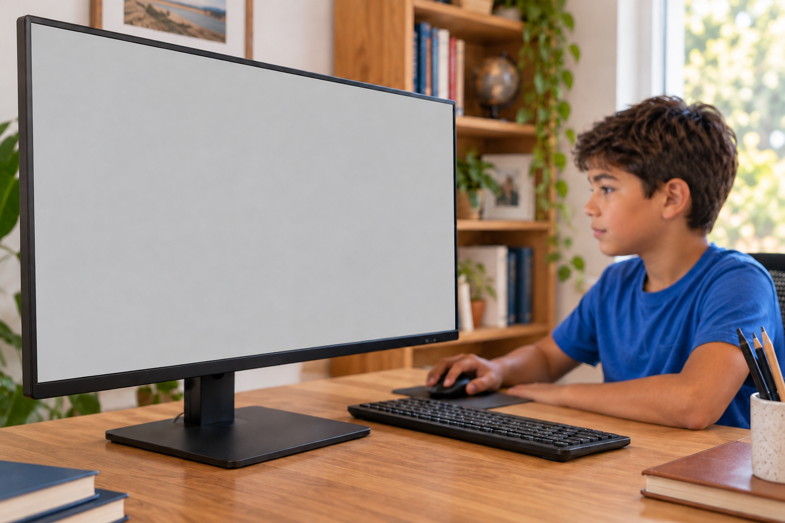
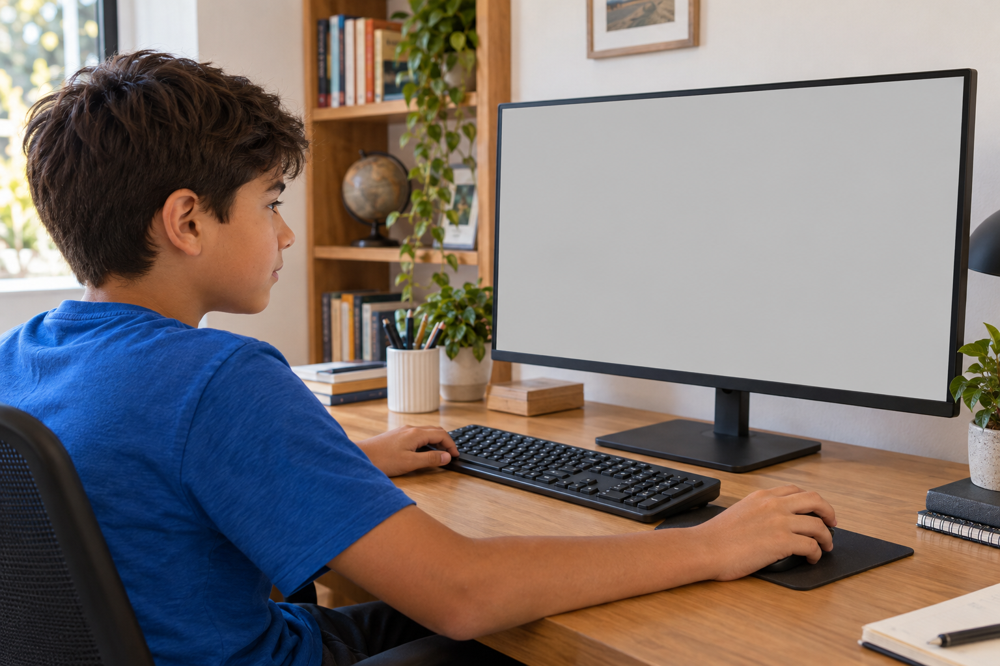
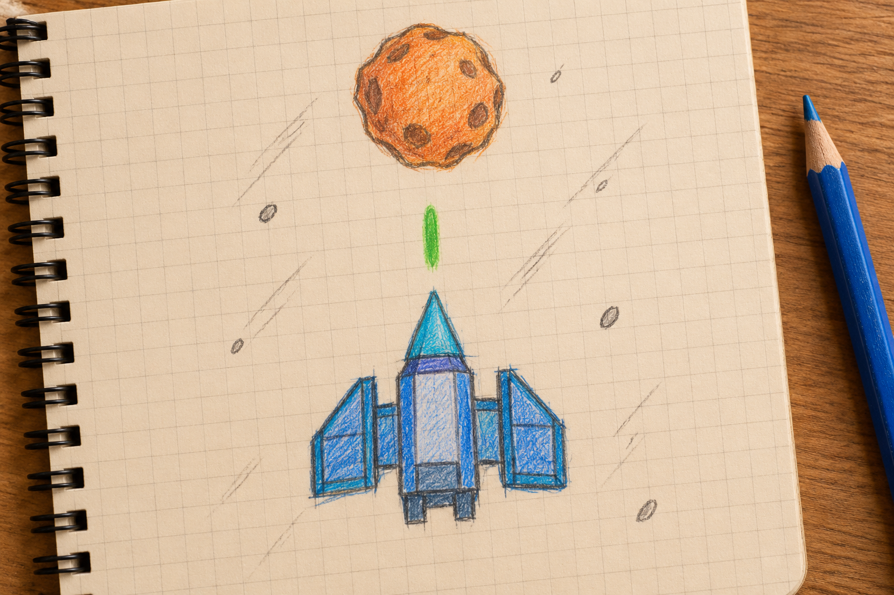
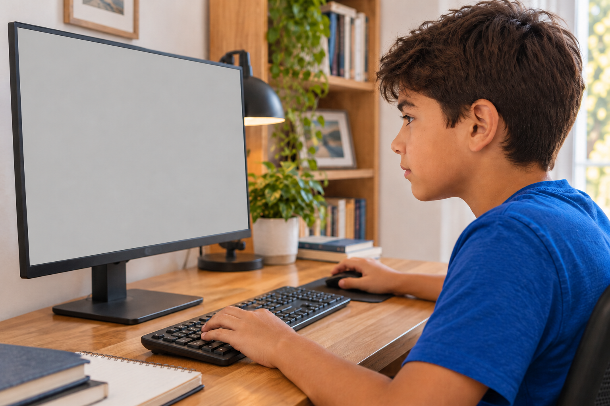
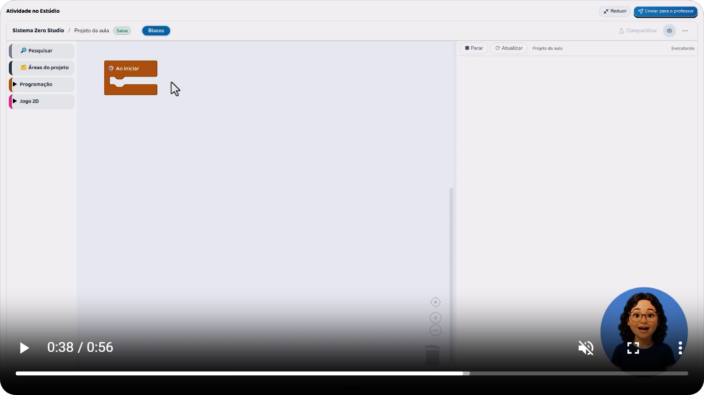
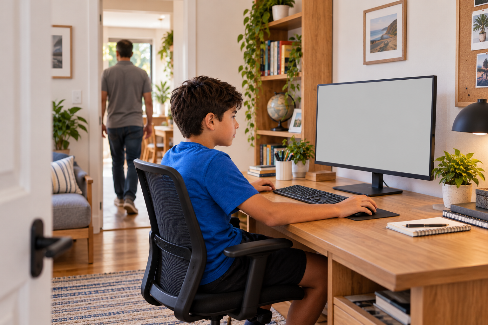

Antes de escolher
Pausar a aula pode fazer parte de aprender.
O importante é o que seu filho faz depois da pausa.

Pausar a aula pode fazer parte de aprender.
O importante é o que seu filho faz depois da pausa.

Numa atividade de criação, a criança precisa de tempo para colocar a explicação em prática.

Só assistir não mostra se ela conseguiu fazer.
Imagine uma aula que ensina a fazer uma nave disparar.

Seu filho assiste à explicação, pausa e monta essa parte do jogo.
Depois, aperta a tecla de espaço para testar.
Se o disparo aparece, ele vê o resultado da instrução que montou.
Se não aparece, ele pode rever a explicação e comparar os passos.

Se continuar com dúvida, precisa saber onde encontrar ajuda.
Uma aula gravada permite fazer essa pausa e voltar ao trecho que faltou entender.

Isso dá espaço para a criança tentar no ritmo dela.
Antes de escolher uma atividade, confira: há tempo para fazer? Dá para rever? Existe orientação quando algo não funciona?
Essas respostas ajudam mais do que saber só a duração do vídeo.
Aqui mostramos como acompanhar o aprendizado de quem está criando jogos.

Siga o perfil para ver mais.